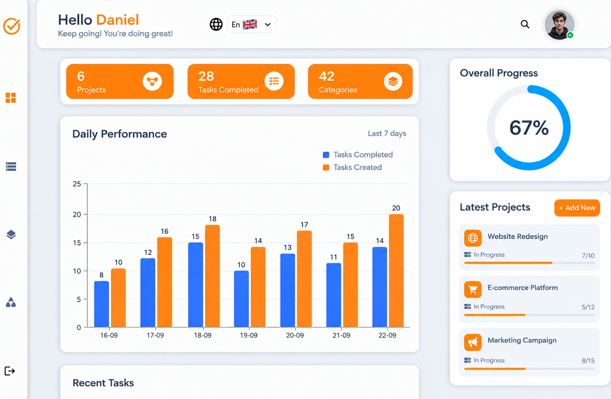
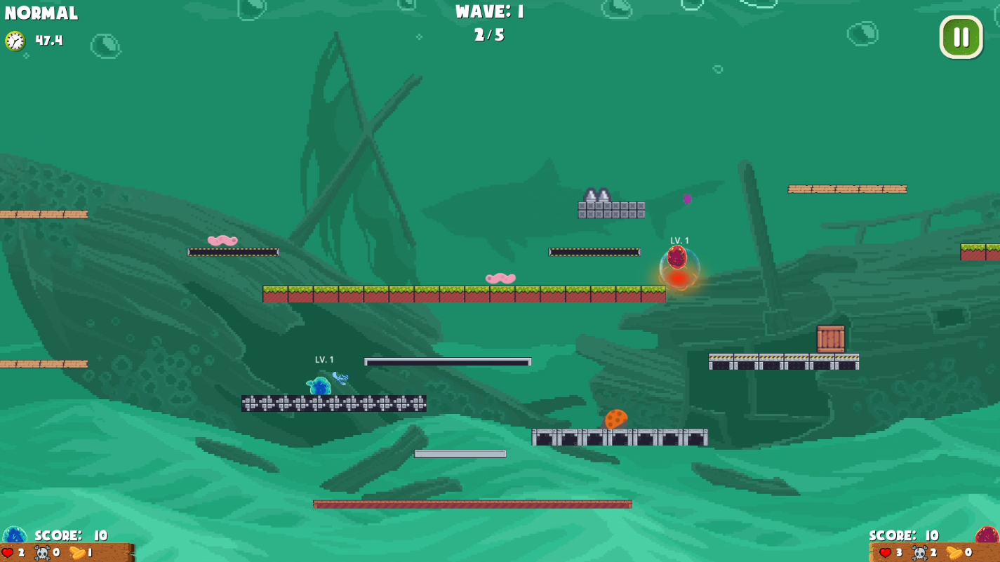
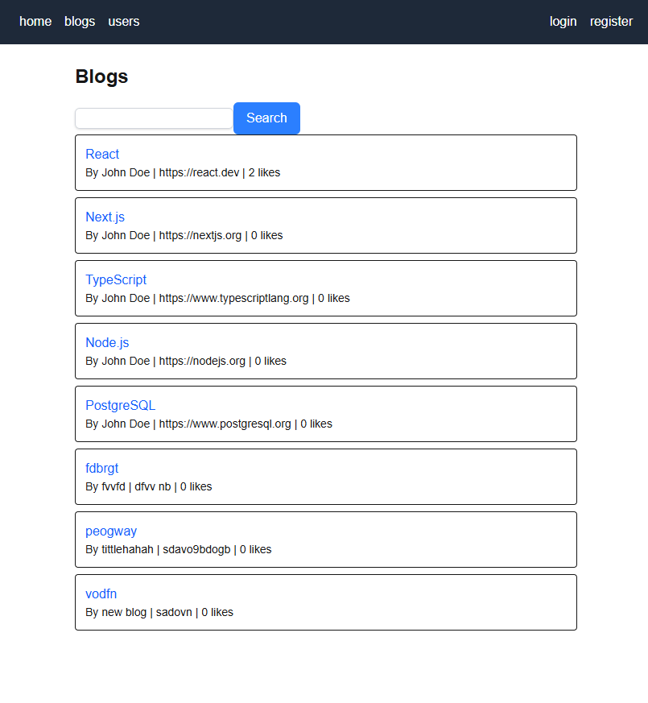

Keys2Balance Oy
Web Developer
Dec 2025 — May 2026Remote | Hämeenlinna, Finland
Worked in a 9-person Agile/Scrum team to build Keys2Balance's full-stack Learning Management System (LMS) from scratch across 6 sprints, supporting 150+ users across Admin, Trainer, and Participant roles.
- Developed end-to-end functionality using React/Redux and Node.js/Express, implementing 44 REST API endpoints backed by a PostgreSQL database with 10 entities.
- Used Git/GitHub for version control, collaborative development, and code reviews, and contributed to production deployment on Fly.io.
- Led frontend tutorials and reviewed teammates' code, helping maintain consistent project structure, coding practices, and code quality.
- React
- Node.js
- PostgreSQL
- Express.js
- JavaScript
- Git
- Teams
- Jira
- Postman
- REST API
- Fly.io
- Neon
- Figma

Project Management Website
Self Project
Jul 2025Self-directed
Built and deployed a full-stack project management app with React, Express.js, and MongoDB, featuring 21 REST API endpoints across 4 collections and JWT-based authentication.
- Implemented project, category, and task management with priority levels, sorting, completion tracking, and a dashboard showing overall progress.
- Developed 8 routes with 36 React components and Redux Toolkit state management, supporting 3 languages (English, Finnish, Vietnamese), and deployed with Docker on Fly.io.

Project demo: Demo
Source code: Source code
- React
- Node.js
- MongoDb
- Express.js
- JavaScript
- Git
- Nodemon
- Postman
- REST API
- Fly.io

Slime Adventure
Self Created Game
Jul 2026Self-directed
Designed and built a 2D action-survival platformer solo in Godot 4 (~3,000 lines of GDScript, 39 scripts, 32 scenes), with 2 playable characters, local 2-player mode, and endless wave progression across 2 difficulty modes.
- Trained a reinforcement-learning enemy-chase agent in Python (Stable-Baselines3) with an 8-feature observation space and a custom shaped reward, then integrated it into the game via ONNX to drive enemy pathfinding.
- Implemented 3-hit combo combat with damage scaling by combo step and player level, XP-based leveling, and platformer physics including multi-jump, knockback, and breakable chests.
- Built a wave system where enemy count grows 40% per wave and enemy HP scales each wave, with weighted chest loot (coins, HP, shield, speed boost) and a coin shop for permanent damage upgrades.
- Added persistent save data for high scores and settings, and took the project from concept to a playable public build on itch.io.

Demo video: Demo video
Live game: Live game
Source code: Source code
- Godot Engine
- GDScript
- GDShader
- C#
- Python
- Git

Blog App Website
Self Project
August 2026Self-directed
Built a full-stack blog-sharing platform with Next.js 16, React 19, TypeScript, and PostgreSQL (Neon) via Drizzle ORM, covering authentication, blog publishing, likes, user profiles, and personal reading lists across 9 routes.
- Designed a 3-table relational schema with foreign-key constraints and evolved it through 8 versioned Drizzle migrations; implemented 6 type-safe server actions covering blog creation, likes, and reading-list management.
- Secured the app with NextAuth credential login (JWT sessions) and bcrypt password hashing, plus server-side form validation and session checks on every protected action; added a Bearer-token REST endpoint with per-user API tokens.
- Wrote 28 Playwright end-to-end tests across 4 suites, covering registration, login, blog CRUD, filtering, and reading-list flows, and automated them in a GitHub Actions CI pipeline that runs on every push and pull request.
- Styled a responsive UI with Tailwind CSS v4 and added case-insensitive blog search.

Deployed website: Demo
Source code: Source code
- Next.js
- React
- TypeScript
- Tailwind CSS
- NextAuth
- Drizzle ORM
- PostgreSQL
- Neon
- Playwright
- Git